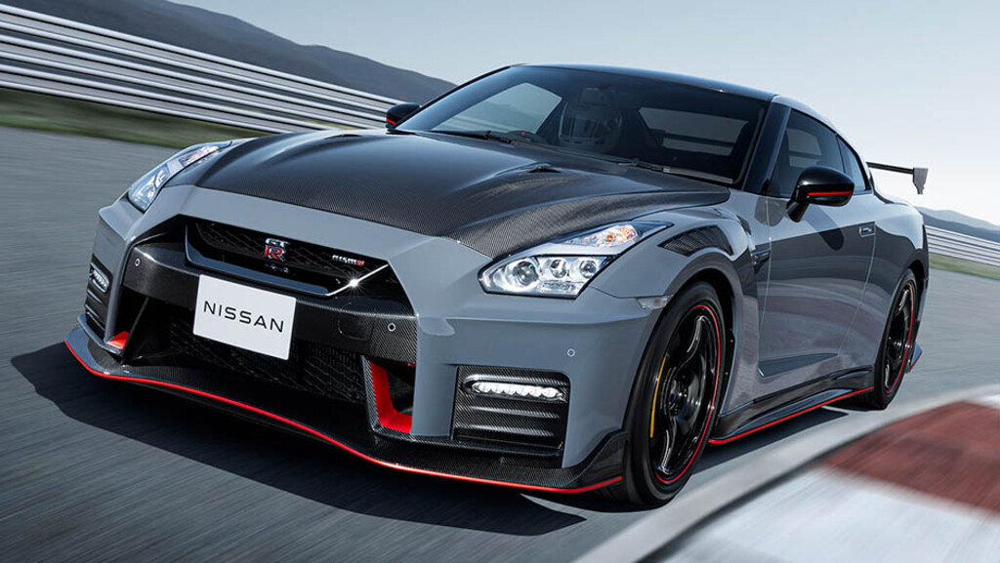
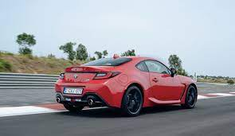
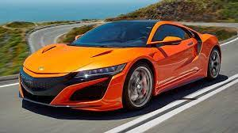

Nissan 1
fue presentado en el Salón del Automóvil de Tokio en 2001, mostrando cómo se vería un GT-R del siglo xxi. En el Salón del Automóvil de Tokio de 2005, Nissan dio a conocer un nuevo prototipo del GT-R, indicando que el GT-R de producción se basaría en un 80 o 90% en este prototipo.
En 2001, el fabricante japonés presentó un prototipo llamado GT-R Concept, con forma de cupé bastante definido con un interior para cuatro pasajeros, panel de instrumentos digital y dos salidas de escape.

Toyota 2
Hay muchas preparaciones deportivas para que este auto trace curvas con tanta destreza. En primer lugar, el techo está fabricado en fibra de carbono —baja el centro de gravedad—; en segundo, el sistema de tracción integral GR Four admite distintas configuraciones. Te permite elegir entre distintos programas, desde uno clásico para enviar la mayoría del poder al eje delantero o repartirlo equitativamente entre ambos ejes, hasta uno que manda el 70% del poder a las llantas traseras. Una máquina de donas, si así lo deseas.

Honda 3
El Honda NSX es un superdeportivo híbrido fabricado por Honda, con motor gasolina V6 biturbo de 3.5 litros y 3 motores eléctricos, llegado para suceder a un venerado icono clásico. Cuenta con tracción a las 4 ruedas inteligente y una potencia conjunta de 581 CV.
El Honda NSX es todo un mito de los deportivos. El modelo original nació en 1990 y ahora, esta segunda generación, se presenta totalmente puesta al día con un diseño agresivo y tecnológico, ofreciendo un enfoque mecánico perfectamente adaptado a las nuevas exigencias a golpe de tecnología híbrida
